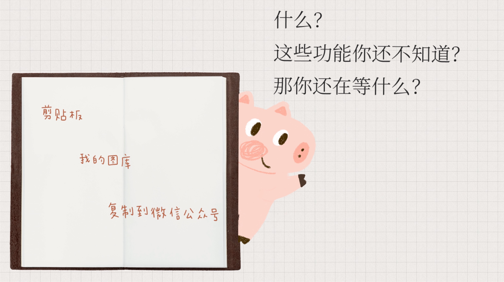
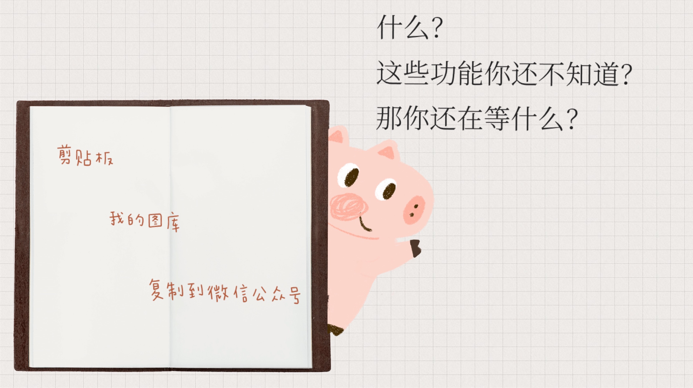
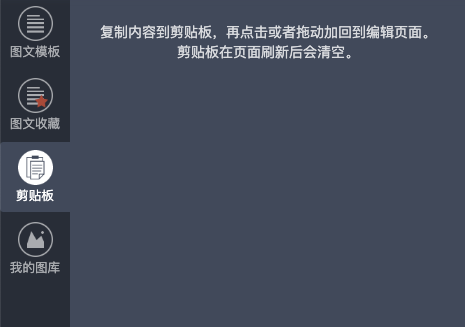
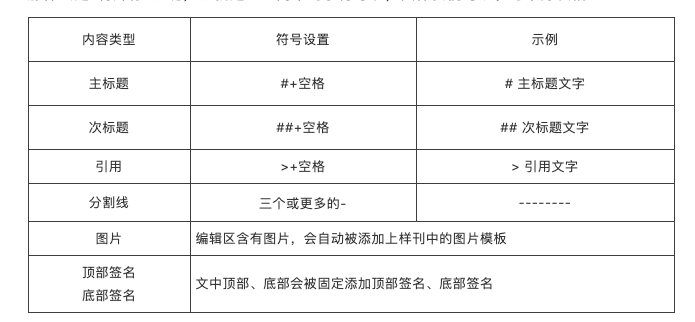

剪切板功能：
如果需要反复使用一段文字或者图片，复制内容到剪切板，在下次需要时，可以直接从剪切板中提取，省时省力。

我的图库功能：
在日常排版工作中，需要各式各样的图片来帮助我们的内容更有吸引力。“我的图库”中可以自己选择图片上传，也可以导入网络图片。图片上限为200张。
一键排版：
打开一篇图文草稿，我们可以先对文章中的内容做“特殊标记”，方便接下来触发一键排版操作。接着在左边模板区中，我们点击选择任意系统样刊，在显示的样刊模板界面中，会出现一个一键排版按钮。现在我们只需要点一下“一键排版”按钮，整篇文章即可一键排版完成。那什么是“特殊标记”呢，也就是一些简单的小符号啦，具体我们可以参考下方表格：
